Stillness · 적막
밤에 남은 흔적
새벽 세 시.
젖은 숲, 눈 덮인 훈련장, 주인을 잃은 관대.
밤 무대 시안 · 브론, 이졸데, 마르그레테와 대련할 수 있습니다.
밤의 화전 터
비가 그친 참나무 숲. 젖은 땅 위, 죽은 가지에는 빈 노끈이 남았습니다.
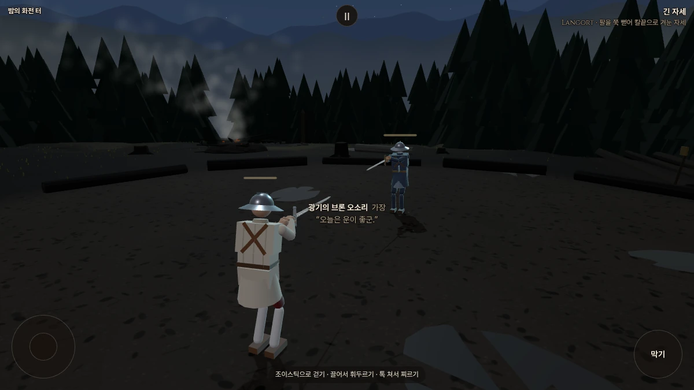
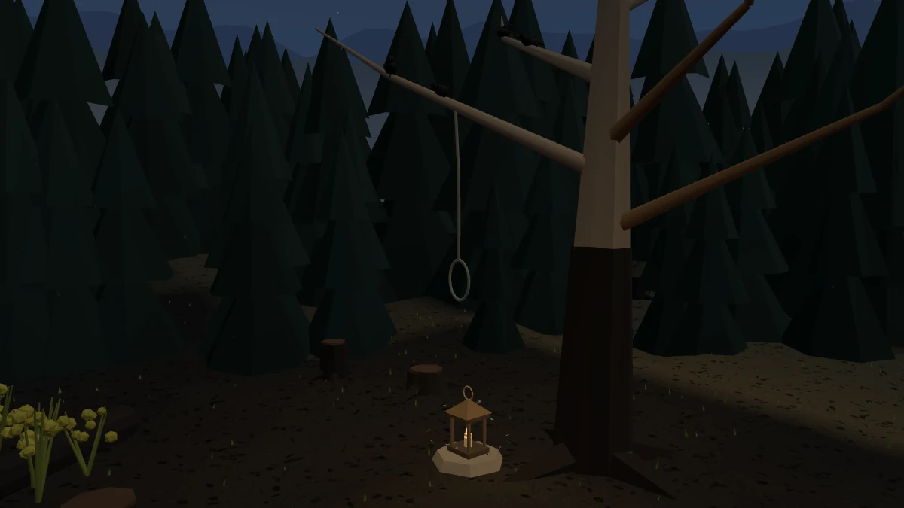
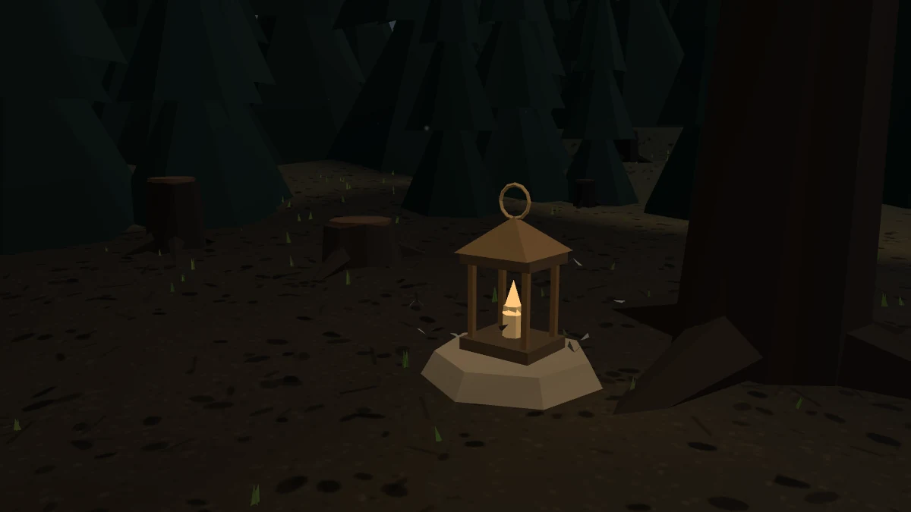
빗소리가 멎은 숲. 젖은 흙과 웅덩이는 남고, 바람과 먼 잉걸불 소리가 들립니다.


이번 변경 전후 비교

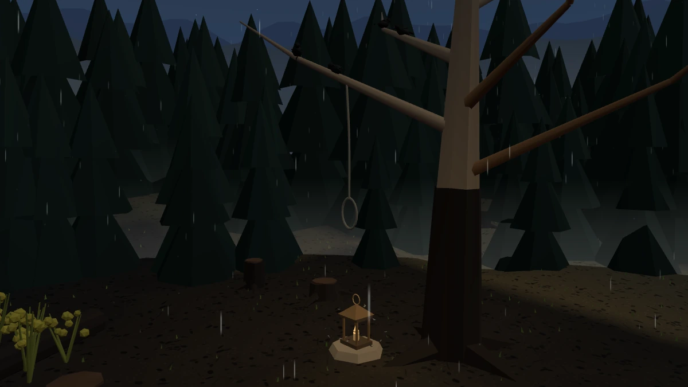

밤의 성 안뜰
폭설이 몰아치는 성 안뜰. 성벽의 큰 횃불 아래, 허수아비 앞의 눈은 거듭 밟혔습니다.
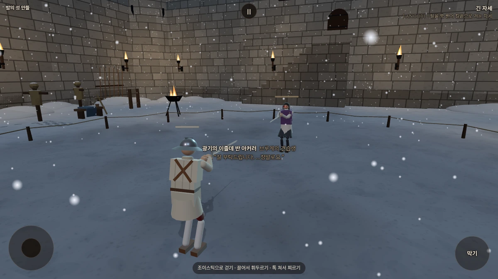
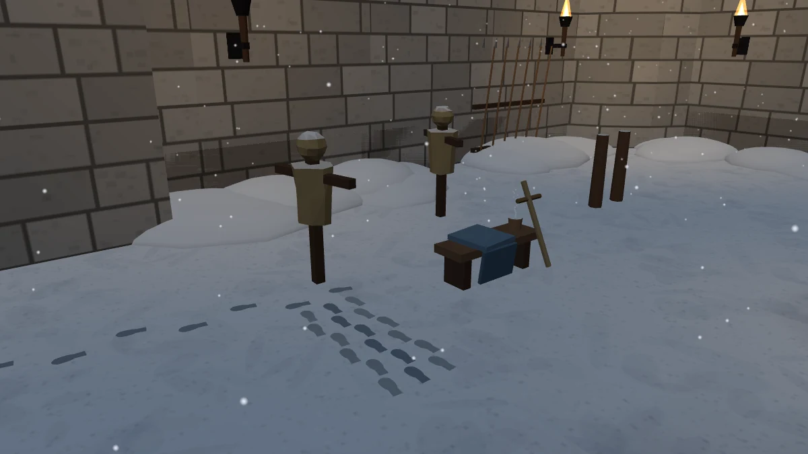
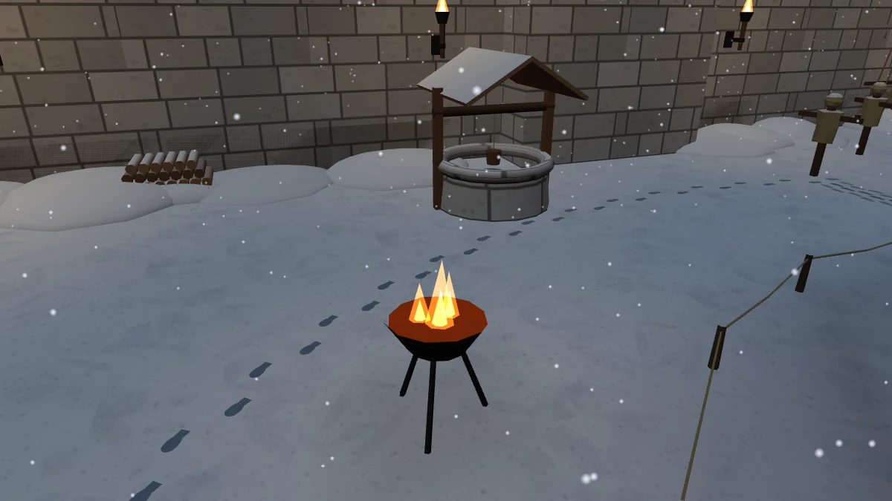
성벽을 넘는 거센 눈바람과 불소리. 멀리 마구간에서 들리는 작은 인기척.
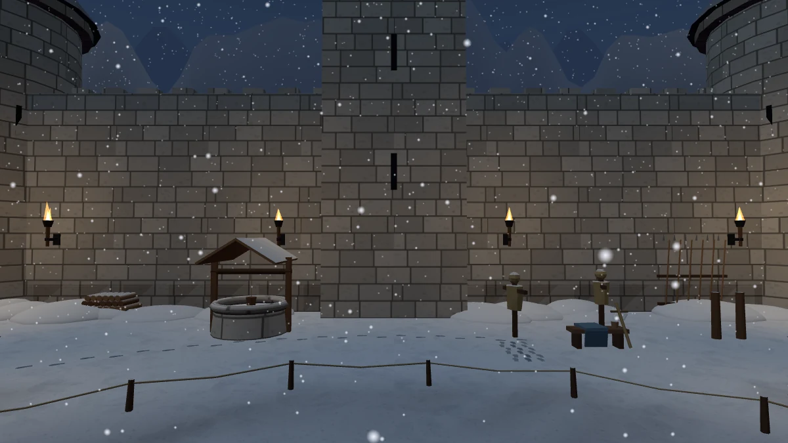


이번 변경 전후 비교

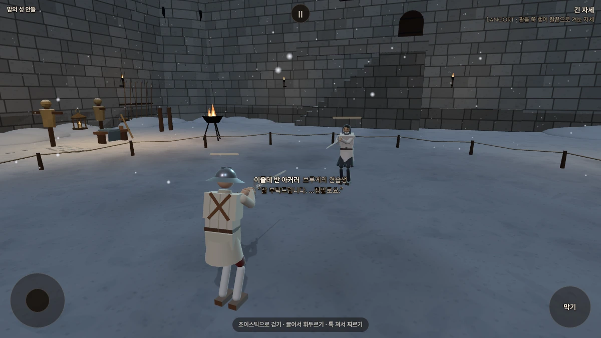
밤의 대성당
밤에는 관대가 비어 있습니다. 장미가 감고 있던 검도 보이지 않습니다.
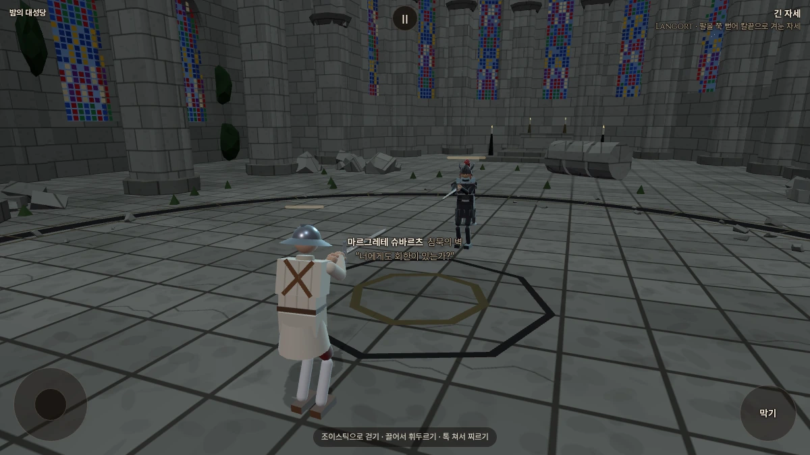
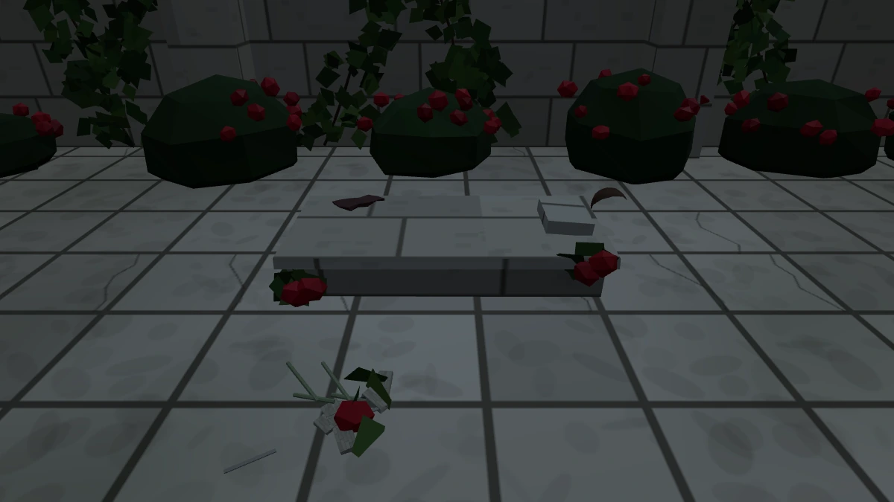
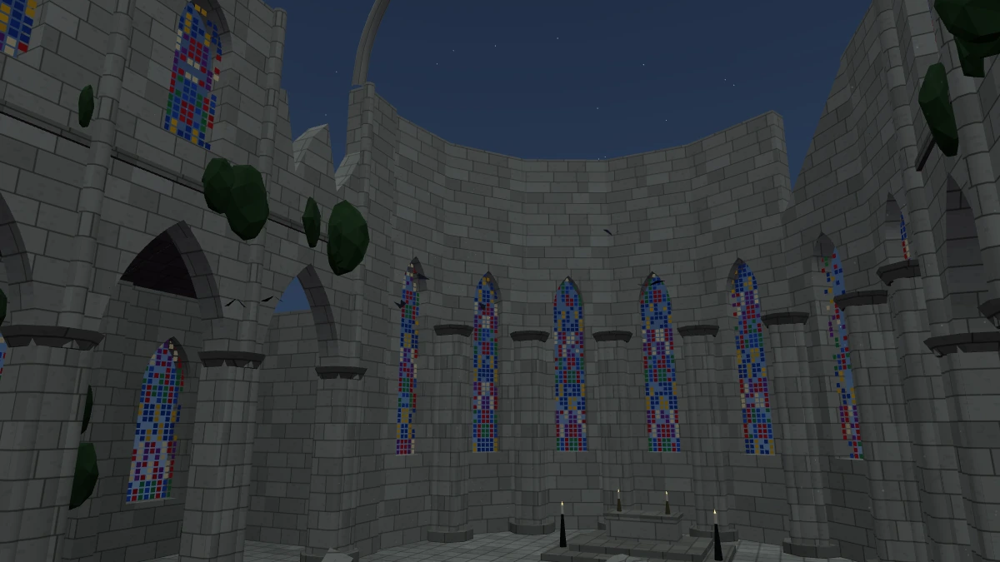
돌 공간의 긴 울림과 깨진 창의 바람. 낮의 비둘기 대신 드문 박쥐 날갯짓.
풍경과 낮 무대 비교
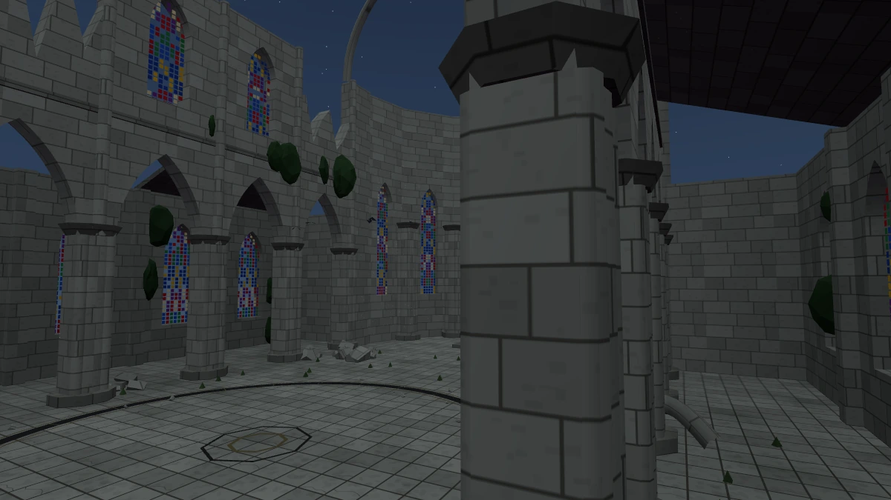

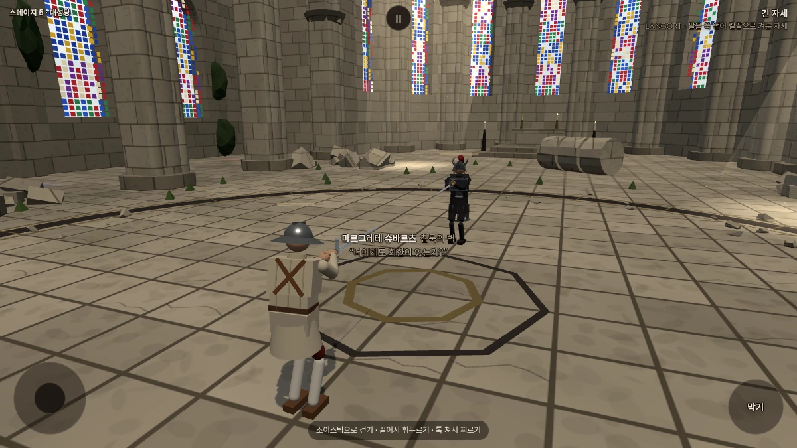


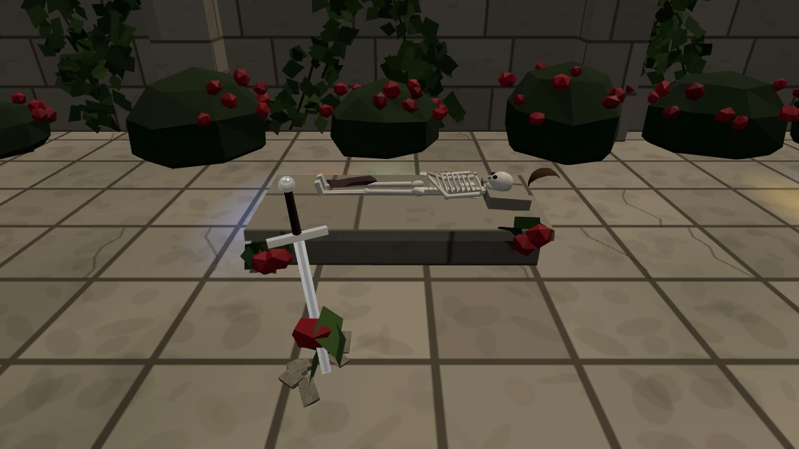

가림천 너머의 붉은빛
천의 결은 남기고, 랴오의 안광을 더 잘 보이게 했습니다.

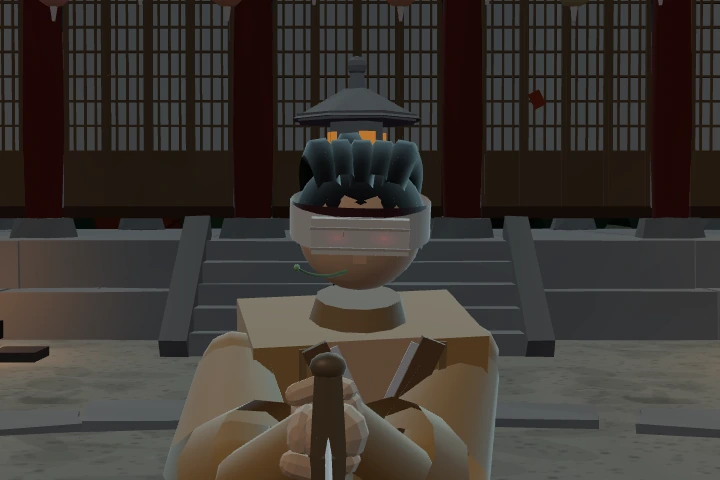

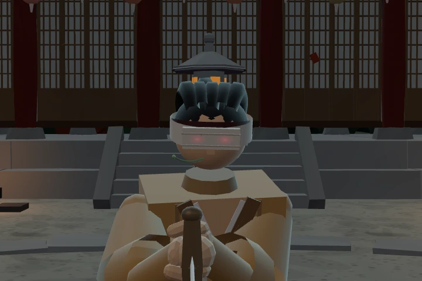